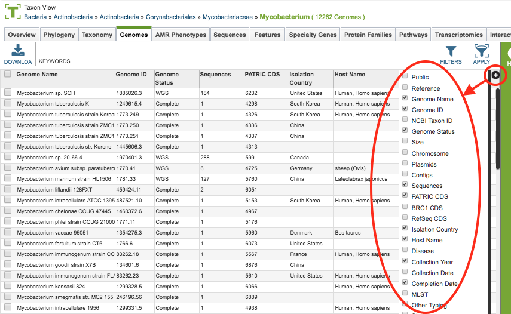

Genome Metadata¶
Overview¶
Genome Metadata is additional information about genomes beyond the genome sequence and annotations linked to the sequence. Genome metadata on consists of dozens of metadata fields, called attributes, which are organized into the following seven broad categories: Organism Info, Isolate Info, Host Info, Sequence Info, Phenotype Info, Project Info, and Other.
See also¶
Accessing Genome Metadata¶
Genome metadata can be accessed in multiple ways:
Clicking the Overview Tab in Genome View: Displays summary information about the genome, including associated metadata. Note that metadata fields that do not contain values are not displayed. See Genome Page Overview.
Clicking the Filter Button above the Genome Table on the Genomes Tab in the Taxon View: Opens a filter panel above the genome list, displaying column names (metadata attributes) from the table and values for those columns with counts of occurence. See Genome Table.
Using metadata values in the Global Search: Displays search results of genomes, and other data, containing the terms specified in the search. See Global Search.
Useing the column Show/Hide button (+) on top right of the table: opens a selection box for choosing which metadata fields to display in the main table. (shown below). The information is also available on the left-hand side of each Genome Overview tab. When a list of genomes is downloaded, all of the metadata fields are included.

Metadata Attributes¶
Organism Attributes: Genome ID, Genome Name, Organism Name, Other Names, NCBI Taxon ID, Taxon Lineage IDs, Taxon Lineage Names, Superkingdon, Kingdom, Phylum, Class, Order, Family, Genus, Species, Genome Status, Strain, Serovar, Biovar, Pathovar, MLST, Segment, Subtype, H_type, N_type, Lineage, Clade, Subclade, Other Typing, Culture Collection, and Type Strain.
Isolate Attributes: Isolation Source, Isolation Comments, Collection Date, Collection Year, Season, Isolation Country, Geographic Group, Geographic Location, Latitude, Longitude, Altitude, Depth, and Other Environmental.
Host Attributes: Host Name, Host Common Name, Host Sex, Host Age, Host Health, Host Group, Lab Host, Passage, Body Sample Site, Body Sample Subsite, and Other Clinical.
Sequence Attributes: Sequencing Center, Sequencing Status, Sequencing Platform, Sequencing Depth, Assembly Method, Chromosome, Plasmids, Contigs, Size, GC Content, Contig L50, Contig N50, TRNA, RRNA, Mat Peptide, CDS, Coarse Consistency, Fine Consistency, CheckM Completeness, CheckM Contamination, Genome and Quality Flags.
Phenotype Attributes: Antimicrobial Resistance, Antimicrobial Resistance Evidence, Gram Stain, Cell Shape, Motility, Sporulation, Temperature Range, Optimal Temperature, Salinity, Oxygen Requirement, Habitat, and Disease.
Project Attributes: Completion Date, Publication, BioProject Accession, BioSample Accession, Assembly Accession, SRA Accession, GenBank Accessions, and RefSeq Accessions.
Other: Additional Metadata, Comments, Date Inserted, Date Modified, Public (true/false), Owner, Members (shared with).
Clinical Metadata¶
Some clinical metadata that is available for only a subset of the genomes available. This includes typing methods that are specific to a small number of genomes (such as spa type or wzi type), but are still important to researchers. These data are stored as a key-value pairs so that the Global Search can find genomes that contain any data for that field (e.g., search for ‘wzi’) or for genomes with specific values for that field (e.g., search for ‘wzi:29’)
Genome Metadata Sources¶
Genome metadata comes from multiple sources including NCBI’s BioProject database, GenBank records, NIAID Genomic Centers for Infectious Diseases (GCIDs), the Human Microbiome Project, and other data submitters. Following the automated collection, the metadata is manually curated for consistency and accuracy. Updated or additional metadata that is not currently available can be submitted using the BV-BRC helpdesk.